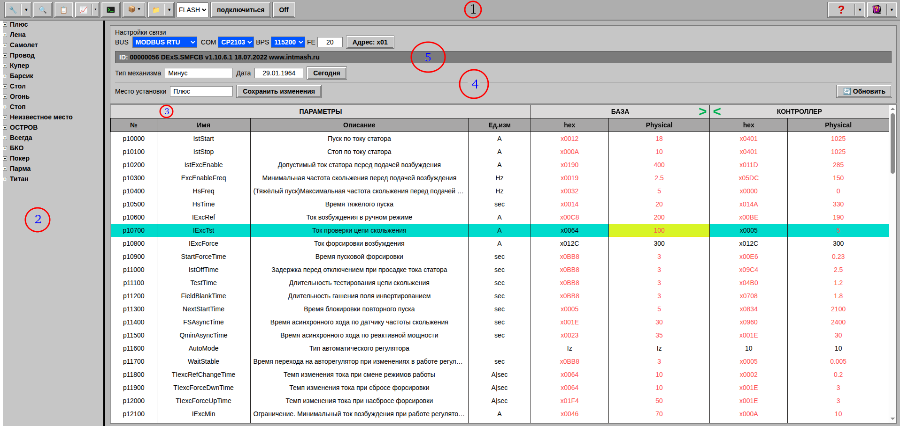
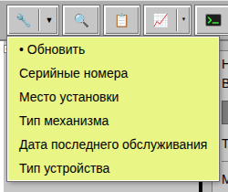
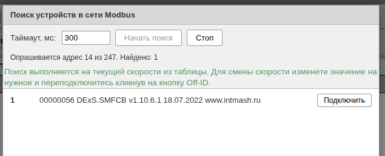

2. Интерфейс приложения
2.1. Главное окно приложения:

Пространство главного окна логически разделено на пять полей:
1 –
Главное меню программы;
2 – Каталог устройств;
3 – Таблица
редактирования уставок параметров устройства;
4 – Панель
дополнительной информации об устройстве;
5 – Панель параметров
связи;
2.2. Меню кнопки “Обновить список устройств”

- Обновляет список устрйств и отслеживает изменения в загруженных ini
файлах;
- Выстраивает устройства по номерам;
- Выстраивает устройства по месту установки;
- Выстраивает устройства по типу механизма;
- Выстраивает устройства по дате последнего обслуживания;
- Выстраивает устройства по типу;
2.3. Кнопка “Поиск устройств в сети Modbus”
